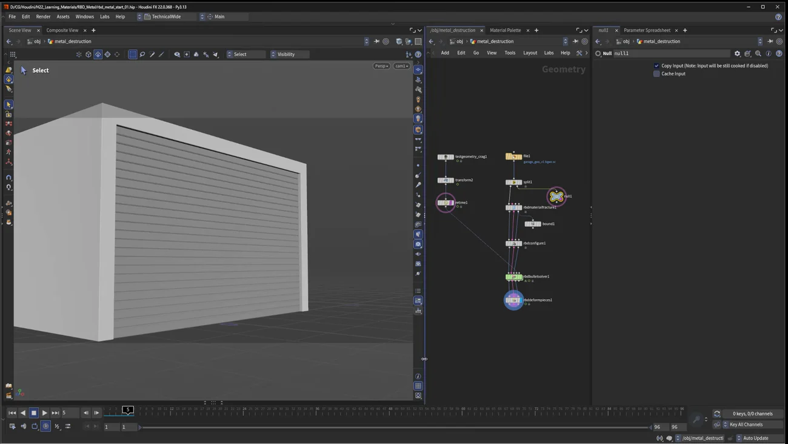
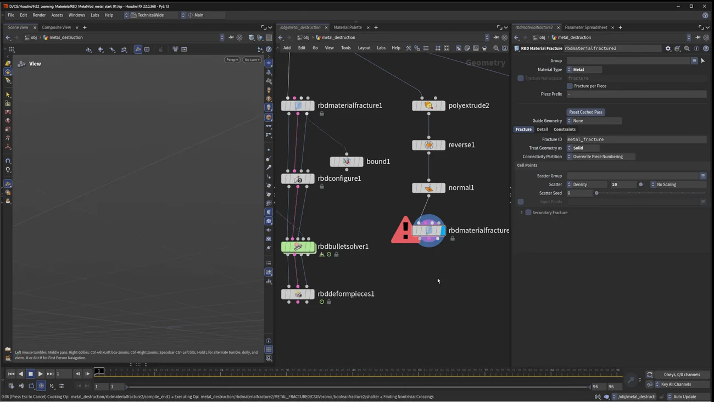

金属を壊す 1 — 引き裂く
出典: Houdini 22 | How to Destroy Metal | 1 | Tearing （SideFX 公式「Houdini 22 How-To」の1本 / Houdini 22 / 15:54 / 英語）。 このページは、上記の動画を見ながら自分用にまとめた日本語の学習メモです。SideFX 公式の翻訳ではありません。
2本を貫く1つの考え方
個別のパラメータを追う前にこれを掴んでおくと、両方の回が繋がります。 金属破壊が「割れる」ではなく「曲がる」ように見えるのは、この構造のおかげです。
| 要素 | 役 |
|---|---|
| 2種類の制約 | Glue（初期の接着）と Soft（Glue が切れた後の金属の曲がりを模す）。 この2段構えが金属らしさの正体です。既定値は高すぎるので下げるのが定石です |
| プロキシだけ細かく割る | Secondary Fracture の Proxy Only。 シミュレーション用のプロキシは細かく、レンダー用の高解像度は大きいままにすると、 大きな破片が細かく曲がります。これが凹みのディテールを生みます （第2回の核心です） |
| 曲がるための頂点 | 高解像度側にポリゴンが足りないと、プロキシが曲がっても形に反映されません。 Refine Geometry で細分化を足して初めて凹みが見えます |
| 薄板と厚板 | Treat Geometry as が Surface（薄板）と Solid（厚板）の切り替えです |
| 引き裂き vs 凹み | RBD Deform Pieces の Boundary Connection と、ソルバの破片が離れる距離。 距離を小さくすれば飛び、大きくすれば曲がって残ります |
| 物性 | RBD Configure の Physical Attribute。Metal にして種類（Aluminum / Steel）を選ぶと 密度が変わり、重さと曲がりやすさの見え方が実際に変わります |
1. 破砕する
付属の rbd_metal_start01 を開くと、ジオメトリコンテナにガレージのジオメトリと、
シャッターに合うように transform と retime を済ませたアニメーション付きの Crag（ハンマー役）が入っています。
Tab→ Split。ガレージのグループからmetal_doorを選んで分離しますTab→ RBD Material Fracture を Split の後に置きます。 まず Manual モードにして（毎回再計算されると待たされます）、Material Type を Metal に- Fracture タブ。既定は 100 点を散布するので
50に下げます。 ディスプレイフラグを立てて Auto Update に戻し、Wで破片を確認します - Detail タブで縁のディテールを詰めます。Detail Size を下げて細分化を増やし、
Noise Height を上げ、Element Size を
215に
効率的な進め方: Manual に切り替えてから値を入れ、最後に Auto Update に戻します。 破砕は重いので、値を1つ触るたびに再計算されると作業になりません。
2種類の制約を確認する
Constraints タブに Glue と Soft があります。 既定値は高すぎるので Glue Strength を 1000 前後に下げます。
2. アクティブ範囲と物性
Tab→ RBD Configure。3入力すべてを繋ぎます- 全体をアクティブにしたくない（上と両側は固定したい）ので、 Active Attribute をオンにして Use Bounds
| 範囲の指定方法 | 内容 |
|---|---|
bound ノード | 最後の入力に繋ぎます |
| 組み込みの Bounds → Bounding Box | ビューポートに赤い箱が出て対話的に調整できます。この例の値は 2.77 / 1.35 / 4.72 |
Physical Attribute を Metal にし、種類を Aluminum に。 密度が変わり、金属の重さと曲がりやすさの見え方が実際に変わります。
3. シミュレーションする
Tab→ RBD Bullet Solver。高解像度 / 制約 / プロキシジオメトリを繋ぎます- 上を固定したので何も動きません。Collision タブ → Ground Plane をオンに（無限床）
- Crag を Collision Geometry 入力に繋ぎます。これでハンマーが当たります
破片が壊れるけれど飛んでいかない
Constraints タブの破片が離れられる距離が高すぎるためです。
0.1 に下げます。
これで破片が外れて面白い形になります。ただしまだ最終形ではありません。
4. 引き裂きの形にする — RBD Deform Pieces
Tab → RBD Deform Pieces。3入力を繋ぎます。
既定では破片を全部くっつけたままにしようとします。 純粋な凹みだけならこれで良いのですが、引き裂きにするには変更します。
| Boundary Connection | 結果 |
|---|---|
| Cluster Attribute（既定） | 破片が全部くっついたまま = 凹み |
| Constraints | 引き裂きの形になります |
プレビューは Ctrl + Shift でテンプレートフラグを立てると Crag が見えます。
フリップブック用のカメラが用意されているので、Flipbook with New Settings で確認できます。
5. 挙動を安定させる（ここが仕上げ）
結果がぷるぷるしてバネっぽくなります。 RBD Material Fracture の Constraints プロパティで直します。
| パラメータ | 操作 | 狙い |
|---|---|---|
| Dampening Ratio | 上げる（4000倍） | 揺れを止めます |
| Angular Dampening | 下げる | もっと外側に曲がるように |
| Angular Stiffness | 下げる | 同様に曲がりやすくします |
狙いは講演者の言葉どおり「もっと曲がってほしいが、挙動は安定していてほしい」。 結果として素早く外へ曲がって、そこで固まります。
Glue Strength を下げると、より多くの破片が外れたり内側に凹んだりしますので、 形が足りないときはここも触れます。

安定化の前後を比べると、形がはっきり良くなります。 「揺れているうちは形が決まらない」ので、この工程は飛ばさないほうがよさそうです。
6. 厚板にする
ここまでは完全に薄い面で扱っていました。厚い金属壁にしたい場合の手順です。
Tab→ Poly Extrude。薄いドアの出力に繋ぎます- Transform Extruded Front を
-0.01に - Output Back をオンにします
- 頂点法線があることを確認し、Reverse で向きを反転します
- 必要なら
normalノードをもう1つ足して見た目を整えます
そのうえで 2つ目の RBD Material Fracture を置きます （1つ目をコピペするのが早いです。Manual モードにしてからコピーします）。
| 設定 | 値 | 理由 |
|---|---|---|
| Treat Geometry as | Solid | これが薄板／厚板の切り替えです |
| 破片数 | 50 → 10 | 厚いぶん重いので減らします |
| Detail Size | 下げてもよい | 厚い面に追加のディテールを乗せるので遅くなります |
W で確認し、exploded view にすると厚みのある金属の破片になっているのが分かります。

厚板は硬い — Glue を下げる
あとは1つ目のセットアップ（RBD Configure 以降）をコピペして繋ぎます。物性は Aluminum のままです。
フリップブックで見ると、破片が硬めで、全部が同じように壊れてはくれません。 そこで Glue を 1000 から 100 に下げます。
これでより多くの破片が内側にも外側にも曲がり、縁に良いディテールが出ます。
薄板と厚板で Glue の適正値が1桁違うというのは、覚えておくと調整が速くなると思います。
この回のまとめ
- 金属らしさは Glue（接着）と Soft（曲がり）の2段構えから来ます。既定値は高すぎます
- 破砕は重いので Manual モードで値を入れて、最後に Auto Update に戻します
- RBD Configure は3入力すべてを繋ぎます。固定範囲は Bounding Box で対話的に決められます
- Physical Attribute の金属種類（Aluminum / Steel）で密度が変わり、見え方が変わります
- 破片が飛ばないのは「離れられる距離」が高すぎるだけです（この例では
0.1） - Boundary Connection が引き裂きと凹みの分かれ目です。Constraints = 引き裂き、Cluster Attribute = 凹み
- ぷるぷるするのは Dampening Ratio を上げ、Angular Dampening と Angular Stiffness を下げて直します。「素早く曲がって固まる」を作ります
- 厚板は Poly Extrude（Transform Extruded Front −0.01 / Output Back オン / Reverse）→ Treat Geometry as = Solid
- 厚板は硬いので Glue を1桁下げます（1000 → 100）
次の第2回（凹ませる）では、 プロキシだけを二次破砕するという別の作り方に入ります。 破片を飛ばさず、曲がって残す方向です。